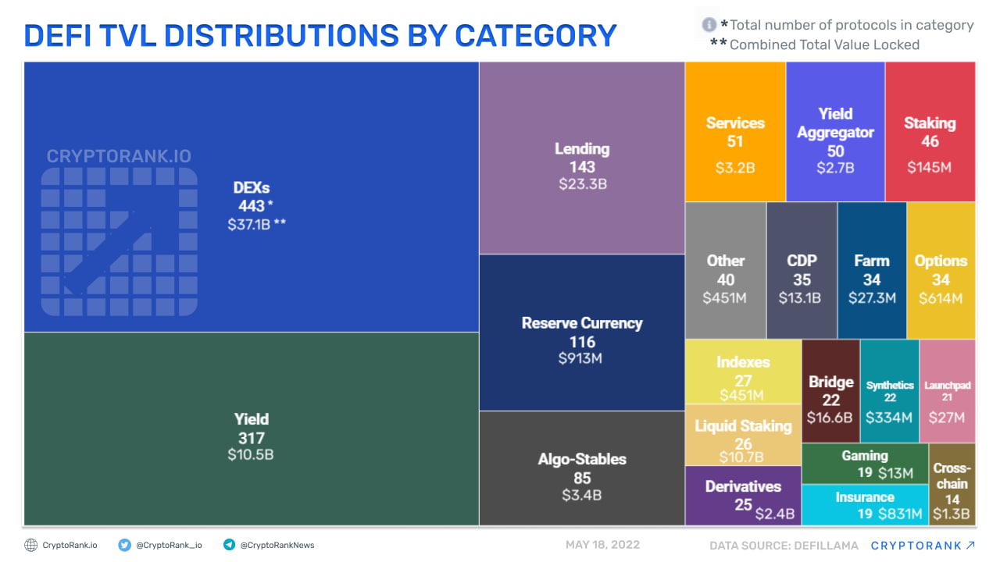
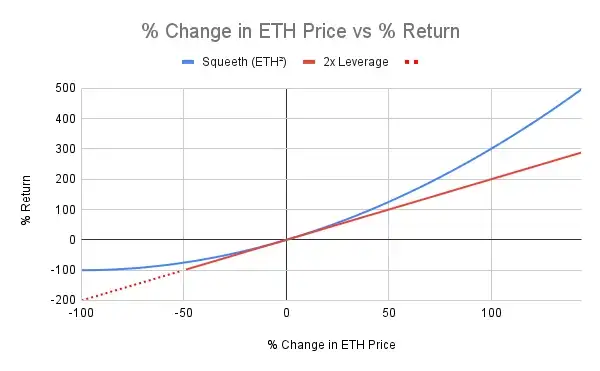
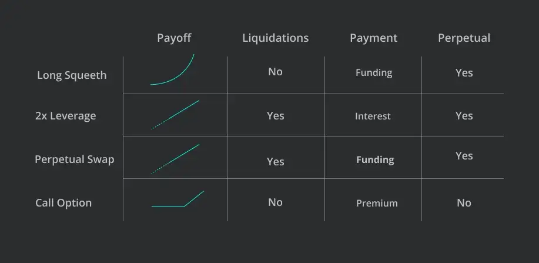
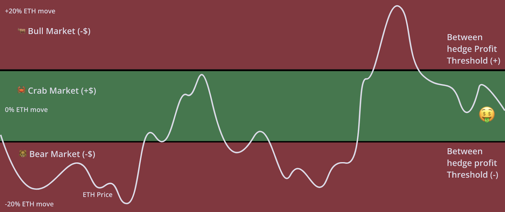
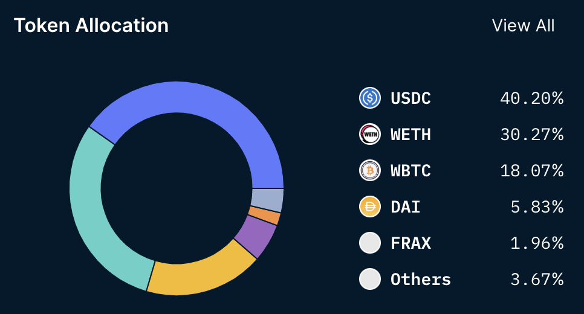
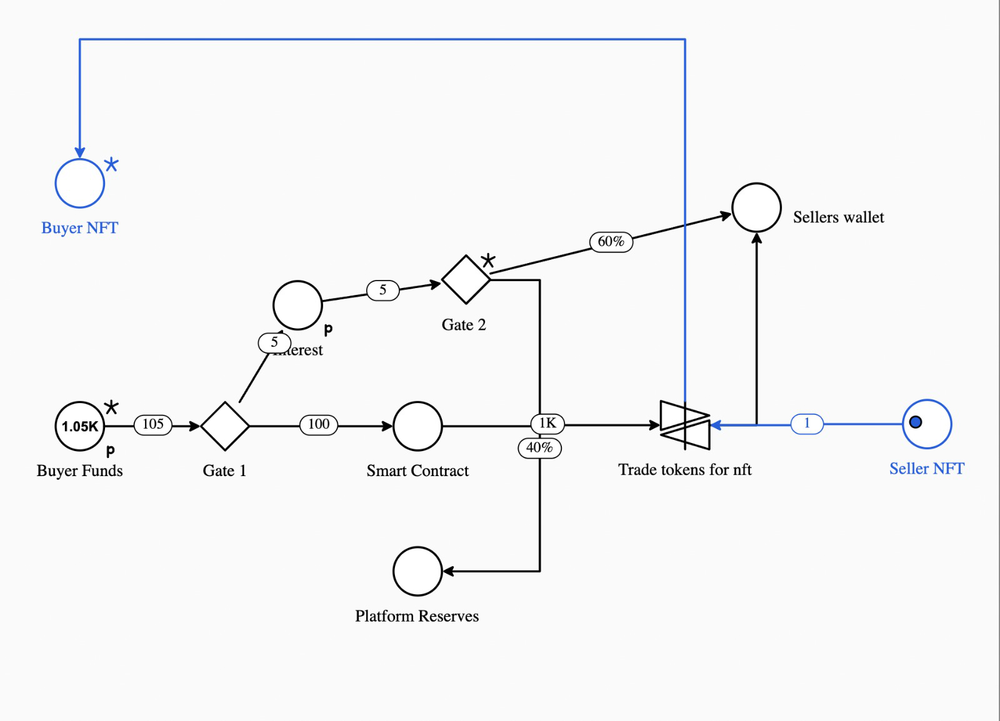

Executive Summary
This research aims to fully explore and understand the current state of the DeFi derivatives market. We embark on this adventure by taking a closer look at what derivatives are, the types of derivatives in DeFi, and their difference from TradFi. By analyzing some of the most prominent derivatives protocols, and their challenges, we will be able to give a complete market overview while also proposing improvements.
Introduction
Traditional finance (TradFi) and decentralized finance (DeFi) are two different approaches to financial services and transactions. Traditionally, traditional finance refers to the systems and institutions that have been in place for many years, such as banks, brokerage firms, and other financial intermediaries. Decentralized finance, on the other hand, is a newer approach that uses blockchain technology and smart contracts to enable financial transactions and services without intermediaries.
One key difference between TradFi and DeFi is the level of centralization. In traditional finance, financial institutions are typically highly centralized, with a small number of large banks and other companies controlling much of the industry. In contrast, decentralized finance is based on decentralized networks and protocols controlled by many different participants rather than a single central authority.
Another difference between the two is the level of transparency and accessibility. In traditional finance, financial transactions and information can be opaque, with only certain parties having access to specific data and information. On the other hand, decentralized finance transactions and information are typically recorded on a public blockchain, which is transparent and accessible to anyone with the right tools.
Decentralized Finances have been an emerging market for the past three years. It has been spanning and touching every aspect of the Web3 world, resulting in the boom of the market and the rise of many different protocols. These protocols aim to replace Traditional Finances with new, cutting-edge technologies whose sole purpose is to bring accessibility, decentralization, and custody while incentivizing users and staying competitive.
The DeFi market expansion resulted in many TradFi services being bridged to distributed ledger technology. Making services more transparent than in TradFi and open to everyone. Here are some of the most notable DeFi market categories in terms of Total Value Locked[1]:
- Exchanges
- Applications
- Lending & Borrowing
- Stablecoins and Stableassets
- Insurance
- Prediction Markets
- Indices
- Derivatives
The market is growing, and the protocols are creating niches in which they operate. However, these categories remain broad, and the borders between them remain blurred.

Source: Cryptorank.io
In this research, we will focus on DeFi derivatives as one of the new and unconquered niches. However, before we do that, let’s start small and explain what derivatives are and how they are used in DeFi, the current state of DeFi derivatives, the challenges they face, and progress to exploring possible improvements and new ideas.
Derivatives and DeFi
Derivatives [2] are financial instruments whose value depends on the underlying asset’s price. They allow investors to expose themselves to market conditions by choosing desired financial instruments. Derivatives can be used either to take on risk and fish for higher returns or to protect the value of your current position. You can get them over the counter or through exchanges.
How does this translate from TradFi to DeFi? DeFi derivatives are simply derivatives built on blockchain technology and operate within the DeFi ecosystem. They solve the same problem as TradFi derivatives. However, their underlying presumptions and solutions are different. Here are four significant differences:
Intermediation - In TradFi, financial intermediaries are banks and brokerage firms, which are centralized systems that also use human capital to conduct these services. While in DeFi, Code is Law, and smart contracts are the intermediaries and the ones automating the process. The assets are locked into smart contracts, which execute the wanted action. This action can be borrowing derivatives, staking tokens, swapping them, etc.
Custody - Centralized platforms act as custodians of your assets, making it hard to manipulate them as you wish, especially when it comes to moving higher amounts. Here is where DeFi comes into play, your assets are stored in your wallet at all times, giving you complete control over them, and allowing you to act as you please. To draw a parallel, withdrawing a significant amount from the bank account could take days or trigger their software to flag your account.
Market efficiency - New technology gives access to more people, increases choice, and decreases market friction, aka transaction costs. Although DeFi derivatives provide access to broader audiences and don’t discriminate based on credit score and other metrics used to evaluate borrowers’ ability to pay back the loan, it falls behind Traditional Finance in terms of choice and market friction. Simply put, the derivatives market is still developing, and there are fewer possibilities in terms of derivatives. Currently, they revolve around options, perpetual swaps, and synthetic assets but face problems with liquidity. Once more users provide liquidity, there will be fewer transaction fees, meaning that DeFi derivatives will operate on Economies of Scale. We will discuss it later in the research.
Collateralization - In DeFi, anyone can access a particular service provided he has enough assets to offer as collateral. How this works with derivatives is that when you want to borrow an asset, you must provide collateral of at least 150% of the initial value. This collateral is usually a stablecoin or a protocol’s native token that is exchanged for the financial instrument of your choice. Collateral assets provide liquidity to the pool and earn yield while locked, and if their value falls below 150%, the borrower faces liquidation and has to rebalance their position. This way, everyone can access derivatives without needing good credit scores or having the protocol rely on safety nets (such as banks).
Goals & Methodology
In this research, we will explore if the problems and shortcomings related to forward contracts in TradFi can be solved using blockchain technology and basic DeFi operating principles. We will do so by
- Explaining the concept of derivatives in DeFi
- Looking at the most prominent protocols in the DeFi derivatives niche
- Analysing their commonalities and challenges they face
- Propose a solution of our own with a description of the technical side as well as user experience
Our goal is to show that with a right platform forward contracts can be efficient and fully-utilized while their shortcomings can be fully mitigated using DeFi. We also want to show that they can be used to pay real-world assets in installments.
Explorative Research
This section will describe five derivative types in TradFi and DeFi. Moreover, we will also discuss their competitive advantages in both worlds. [3]
Forwards
Forward contracts represent a non-standardized financial instrument (derivative) between two parties that want to buy or sell an asset at a predetermined price in the future. They are fully customizable and are different from futures contracts because they are not traded on exchanges. Two parties generally must agree on the specified price, maturity date, and a specific commodity to be delivered. [4]
They are used for hedging against price changes, which is why big corporations are trading with them. Still, since they are not standardized, there is always a counterparty default risk. There aren’t any web3 protocols providing forward contracts. We will use this as a base and an opportunity for our research. Let’s proceed and get a complete overview of the rest of derivatives.
Options
Options are the most widely used financial instruments since they offer the buyer the right to buy or sell the underlying asset without the obligation of actually doing so.
There are two types of options Call and Put. The Call gives you the right to buy, while Puts give you the right to sell. All options have maturity dates at which the option expires and after which it cannot be exercised.
Depending on when the option can be exercised, there are two types of options, American and European. American options can be exercised at any date before expiration and usually have stocks as an underlying asset. In contrast, European options can be exercised only on the maturity date and use indices (i.e., SP500 pairs as underlying assets). Let us take a look at the DeFi protocol that offers options trading. [5]
Opyn
Opyn is a DeFi options trading platform operating on Ethereum, Polygon, and Avalanche with $56.8M in Total Value Locked. It allows users to create, buy and sell options. It is also the first options trading platform in DeFi.
Its primary token is OSQTH (OpynSqueeth) which acts as the index that follows the price of ETH-squared (ETH^2). OSQTH is a mix of options, and perpetual swaps called power perpetual. It follows the squared price of an underlying asset without an expiry date, limiting the downside risk while offering a better return than a 2x leveraged Eth position. [6]


Source: Opyn.co
Generally, DeFi platforms require collateral for entering the position. The cool thing about Opyn is that their collateral ratio is 0% for the Long Squeeth position, which means that the investors have downside protection with unlimited upside. However, shorting Squeeth requires a collateral ratio of 150%, which is an average in DeFi.
Aside from Long and Short Squeeth, Opyn offers a ‘Crab’ strategy: A position betting on the ETH price moving inside a proposed interval. This is an excellent way of short-term investing during market stagnation since this is a delta-neutral position. Something between Bull and Bear, as it seems.

Source: Opyn.co
Our opinion:
Opyn is the most prominent options trading protocol in DeFi. However, Opyn and the rest of the options trading platforms need more options than they offer their traders. As of now, Opyn offers long and short positions on OSQTH as well as Crab strategy.
To boost the adoption of the DeFi Options niche, protocols need to extend their services to creating and trading options spreads. Options spreads are strategies where investors buy options with the same underlying asset but with different strike prices, expiration dates, or both [7][8]. Spreads allow users to protect their assets from potential market volatility while creating opportunities for capturing higher profit margins. So far, Hegic offers options spreads. [9]
Offering a wider choice of options would give investors more profit opportunities, resulting in more capital inflow and, thus, more liquidity. Emphasis on liquidity as the biggest concern in the market right now.
Futures
Futures require the person to buy or sell an underlying at the specified date regardless of favorable market conditions. In other words, parties agree on the price of an asset paid which will be delivered in the future. They are used for hedging or speculation, just like options. Also, unlike forwards, they are fully standardized financial instruments traded on exchanges.
Futures carry greater risk for investors than options since they must be exercised at the maturity date, which can result in potential losses from the drop in value of the underlying asset. This risk is almost negligible with options since the investors can opt not to exercise the option and only lose the premium they paid for acquiring it.
Perpetual Swaps
Perpetual Swaps are very similar to futures contracts. However, what distinguishes them is that they do not have an expiration date. This implies that investors can open positions and close them as they please without worrying about the maturity date.
Just like futures, perpetual swaps offer investors trading opportunities without directly owning the underlying asset (typically cryptocurrencies, commodities, or currency pairs) while allowing them to open positions bigger than their trading capital. Let’s look at the two most prominent examples of perpetual trading platforms. [10]
dYdX
We covered perpetual swaps and are now covering one of the first protocols to offer them. dYdX has $437.16M in Total Value locked, making it the second biggest Derivatives platform.
Aside from perpetuals, dYdX is an Order Book DEX that offers borrowing, lending, and spot trading with 0% fees for trade volume under $100K, making them one of the biggest competitors in the industry. The collateral ratio for borrowing is 125%; however, the deposited collateral earns interest. Perpetuals can be 20x leveraged. [11]
Aside from that, they operate on Ethereum and have their own token, DYDX, which is used for governance. Users holding DYDX have voting rights and can participate in the protocol’s decision-making.
GMX
The largest Decentralized Perpetuals platform, operating on Arbitrum and Avalanche with over $466M TVL, is GMX. Unlike dYdX, GMX is an AMM that offers its users 50x leveraged trading.
What also makes this platform competitive is its low fees, pool transparency, and native tokens GMX and GLP. GMX is used for governance, and holders earn 30% of protocol fees. GLP is the liquidity provider token, generating lenders 70% of protocol fees. It is also an index of pooled assets that serve as the protocol’s Proof of Reserves. [12]

Our opinion:
Perpetual swaps are the most popular and developed derivatives in DeFi as they are not constrained by the maturity date and offer good terms in the sense of leverage. These protocols have greatly captured the market share by offering low transaction fees, high leverage, and transparency. One thing that gives GMX the edge over dYdX is that GMX is
AMM-based and not Order Book. Liquidity is essential for users that want exposure to assets with low trading volumes. While Order Book is still better when there is liquidity as users match each other’s trades, AMMs are a better way of providing liquidity to otherwise illiquid pairs. [13]
Synthetics
These derivatives are new to crypto but not necessarily unique in Traditional Finance. Synthetics are assets that track the value or performance of the underlying asset or combinations of assets. In the DeFi sense, synthetics can also be considered tokenized representations of different types of assets. Users can bet for or against these assets by entering long or short positions.
Synthetix
Synthetix is a decentralized platform where users can mint and trade synthetic assets. These assets are called Synths and can be either Regular Synths (long position - sSynth) or Inverse Synths (short position - iSynth). As previously mentioned, users can tokenize real-world assets such as fiat, crypto, indices, commodities, etc. Each tokenized asset is ERC20. [14]
The protocol has a collateralization ratio of 750%, which is exceptionally high. Stakers get flagged for liquidation when the CR falls below 200% giving them three days to rebalance it. The native token is SNX which is also used for governance purposes. The governance scheme is very delicate; however, it all comes down to community members staking SNX and choosing the next steps for the protocol, such as target collateral, liquidation ratio, and staking rewards.
Synthetic is available on both Ethereum and Optimism, but users are encouraged to use Optimism since the fees are significantly lower. As of now, the Total Value locked is at $308.93M.
Our opinion:
While Synthetix protocol is the largest synthetic assets platform in Web3, it could be better. The user experience and all the loops that the user has to jump through to borrow the synthetic asset make it unappealing for mass adoption. Also, the protocol only offers a few synthetic assets to choose from while maintaining a very high collateral ratio. Mirror protocol, for example, provided many more assets to choose from with a collateral ratio five times lower than Synthetix’ (150%) but unfortunately blew up with the Terraform Labs incident. [15][16]
So far, there aren’t any tokenized ETFs in the space, so creating a synthetic ETF could bring diversity and increase choice in the DeFi Derivatives market.
Results & Discussion
Every project or protocol tries to distinguish itself on the market and bring something new and liberating. However, while doing this research, we noticed a pattern of common resemblances and challenges:
Governance - All protocols have native tokens that can be staked for voting rights and/or liquidity, providing rewards. These voting rights are put to use when the community proposes protocol improvements (IP). Those improvements usually target LP rewards, collateralization ratio, availability of different asset pairs, etc. It is a good idea to have the community vote on the future aspects of the protocol’s path.
Overcollateralization - Speaking of collateral, most borrowing and lending protocols like to keep safe at around 150% CR. Derivatives, in general, are riskier and should be handled by more seasoned investors/traders. Still, DeFi is all about accessibility, so the middle ground is found at high CRs, such as 750% in Synthetix’s case. This is very unappealing for investors looking to enter the DeFi derivatives market, as it shifts most of their attention away from following their portfolio to monitoring the collateral and thinking whether they should rebalance it. TradFi has the edge over DeFi, simply because the banks take a mortgage or fall back on government safety nets in case of runs.
Transparency - This has been a relatively common topic lately, with many (centralized) crypto exchanges failing and people wanting to know what is happening with their assets. More and more DeFi protocols know this is a differentiating factor. Even though they may not be custodial, they are nevertheless setting up their Proofs of Reserve to provide full transparency to the user. The PoRs are essential (especially to AMM-based protocols) in preventing illiquidity and potential bankruptcy. Moreover, the Proof of Reservers was highly overlooked in the recent year, and many protocols failed to deliver theirs, setting themselves up for a potential run-on. Good examples are Celsius and FTX.
Transaction-related costs - Slippage and protocol fees are variable costs with every transaction. Part of the protocol fees is paid out to liquidity providers or miners, while the other represents protocol revenue. Protocols aim to achieve Economies of Scale by charging low fees to many users. This way, they attract more users who bring in even more liquidity. Looking at GMX and dYdX, it is working (GMX - 0.1% trading fee, dYdX - 0% fees under $100k trading volume). TradFi has many fees for its services, and almost all transactions include a small fee. DeFi is trying to minimize this. However, there is still a long way to go. For example, Polygon charges low fees but bridging your ERC20 to its mainnet will still cost you money.
Leverage - Finally, and most importantly, everybody loves a good gamble, and if it is not a gamble for you, you love it even more. Leverage allows an investor to control more capital than they initially invested. This is done by borrowing money from the protocol’s liquidity pool to magnify returns on investment potential. However, this also means that you stand to lose more. By now, it is a standard for the protocol to offer at least 20x leverage. GMX is doing 50x. However, some protocols offer 100x leverage. [17]
Fast Forwards - Our Solution
Researching the space, we came across many platforms offering services that mix options, futures, and perpetuals but not forwards. This is why we decided to propose our solution called Fast Forwards.
Fast Forwards is a platform (marketplace) that combines derivatives, NFTs, and yield rewards to provide users with forward contract services. Users can buy or sell their assets at a predetermined price on a specified date without the risk of a counterparty default. How does it work?
Let’s say you are a buyer and want to own an NFT but cannot immediately pay its total amount, or you are an NFT holder that wants to sell their NFT but wants to earn passive income while waiting for the NFT to find a buyer. This is where forwards come into play.
Buyers can choose an NFT from our marketplace for whose price they believe will increase and get a forward contract. This forward contract requires the buyer to deposit only a fraction of the prespecified price to reserve the NFT rights to themself. The deposit is locked into the smart contract that requires periodic installments plus interest until it reaches the prespecified value of the NFT. When it reaches the value on the specified date, the NFT is transferred to the buyer. This directly eliminates the problem all DeFi derivatives protocols face, which is over-collateralization.
On the other hand, the seller of the NFT believes that the price of the NFT will decrease and puts it up for sale, hoping to earn a higher premium. When the NFT finds its buyer, it is staked and earns interest yield while locked into the smart contract. The seller earns the total prespecified value plus the accumulated passive income when the forward contract has matured.
In case of not meeting the refinancing requirements of the forward contract (carried out in stablecoins), the buyer faces liquidation. The interest he paid is kept and split between the protocol and the staker, acting as protocol revenues and the staker’s rewards.
Part of the revenue is stored in a reserve pool, which is used to buy and compensate liquidity providers until their NFTs find a match. This is where the community comes into play. Following the successful models of previous protocols, we would issue our governance tokens so that the users can vote on improvement proposals, fees, staking rewards, etc.
Here is the visual representation of the architecture behind Fast Forwards done in Machinations with the help of our fellow researcher Aleksandar Damjanovic. Moreover, here is the link to the full simulation.

In the short term, the focus is to allow buyers to acquire NFTs through installed payments while sellers earn yield. The concept is based on the Order Book matching system, and this way, we are solving the counterparty default risk by limiting the default possibilities only to the buyers’ side. If the buyer defaults, the sellers still profit and get their NFTs unstaked, making their expected losses equal to zero. This is how DeFi solves the main problem TradFi forwards face.
Looking long term, we expect NFTs to be adopted globally as proof of ownership. This would open the possibility of our platform providing real-asset trading services, such as buying and selling real estate through installed payments on the blockchain with minimal risk.
This is the way to make DeFi permissionless and trustless, and accessible to everyone without even using the over-collateralization as the rest of DeFi Derivatives protocols.
Risk and Challenges
We covered principles on which most platforms operate. However, users should know the risks and challenges associated with Fast Forwards and DeFi derivatives. These include:
Counterparty risk - In traditional finance, derivatives contracts are typically executed and settled through a clearinghouse, which acts as a middleman and helps to reduce counterparty risk. In DeFi, derivatives contracts are generally executed and paid directly between the user and the platform, which means that users are at risk of defaulting on their obligations. As previously mentioned, Fast Forwards mitigates the seller’s side default risk. However, buyers of the NFTs should carefully consider if they can pay out the whole NFT before entering the long forward position.
Liquidity risk - Many DeFi derivatives are traded on decentralized exchanges, which can have lower liquidity than traditional centralized exchanges, especially if they are Order Book based. This can make it more difficult for users to buy or sell their positions, especially in times of high volatility, where you want to move assets quickly. A key characteristic of NFTs is that they are illiquid and Order Book based, which could pose a threat to Fast Forwards in the early stages of our platform/marketplace. This can be solved by finding a chain that offers the lowest transaction fees and minimizing the discrepancy between the interest the buyers are paying, and the stakers are receiving. Taking a revenue cut to attract users from both the supply and the demand side.
Regulatory risk - The DeFi space needs to be more regulated, meaning users have a lower level of protection than traditional finance. However, forwards are not standardized financial instruments, making our platform even more attractive as we wouldn’t have to jump through regulatory hoops.
Technical risk - Protocols are exposed to attacks that might compromise their users’ assets. No one is bulletproof, which is why we must have smart contract audits to ensure the safety of the assets. Here is a tracker for all the hacks that happened recently.
Wash trading risk - We must also consider that before being listed, NFTs could be overpriced through wash trading. This is why we must guarantee fair prices to the buyers of our platforms. We will further explore whether this should be done through our Wash Trading Tool or by letting the buyers bid for NFTs on our platform. A more logical solution would be to let the market sort itself without any intermediation from us.
Conclusion
In this research, we fully explored the DeFi derivatives market, from what derivatives are and what platforms utilize them in DeFi to proposing our solution and exploring its challenges. We believe this vast market has many opportunities to create new niches. We saw the opportunity to bridge the most overlooked derivatives, forwards, from TradFi to DeFi, as this hasn’t been done yet. The next steps would be to discuss the architecture of Fast Forwards and explore the product further by challenging it with discussion. If the idea keeps making sense, the next step would be creating a Proof of Concept. Stay tuned.
Bibliography
How to Defi: Beginner
How to Defi: Advanced
[1] https://cointelegraph.com/explained/what-is-total-value-locked-tvl-in-crypto-and-why-does-it-matter
[2] https://www.cfainstitute.org/en/advocacy/issues/derivatives#sort=%40pubbrowsedate%20descending
[3] https://www.investopedia.com/terms/d/derivative.asp
[4] https://www.investopedia.com/terms/f/forwardcontract.asp
[5] https://www.investopedia.com/terms/e/europeanoption.asp
[6] https://medium.com/opyn/squeeth-primer-a-guide-to-understanding-opyns-implementation-of-squeeth-a0f5e8b95684
[7] https://www.sofi.com/learn/content/options-spread/
[8] https://www.schwab.com/learn/story/reducing-risk-with-credit-spread-options-strategy
[9] https://www.hegic.co/
[10] https://jamesbachini.com/defi-derivatives/
[11] https://dydx.exchange/
[12] https://gmx.io/#/
[13] https://mvpworkshop.co/blog/order-book-vs-amm-which-one-will-win/
[14] https://synthetix.io/synths
[15] https://mirrorprotocol.app/#/trade
[16] https://www.kraken.com/learn/what-is-mirror-protocol-mir
[17] https://coinmarketcap.com/alexandria/article/a-deep-dive-into-leverages-in-defi-borrowing-margin-trading-leveraged-tokens-and-options-finnexus